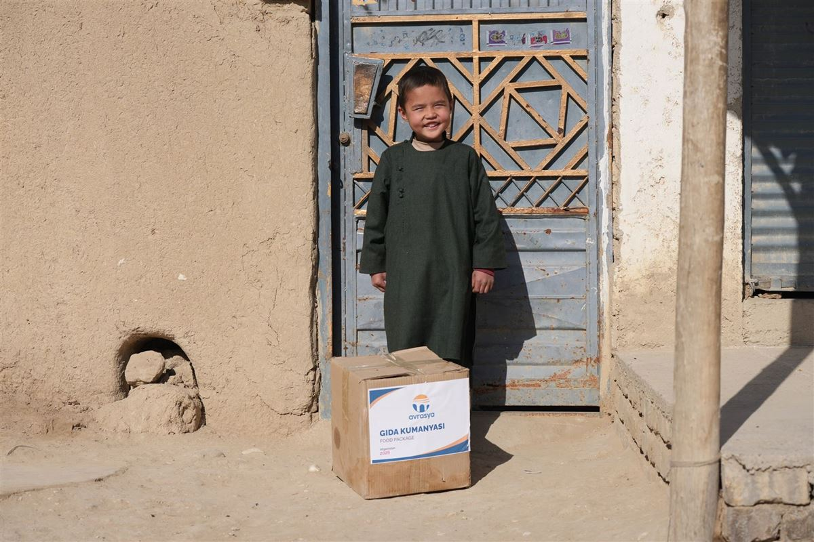
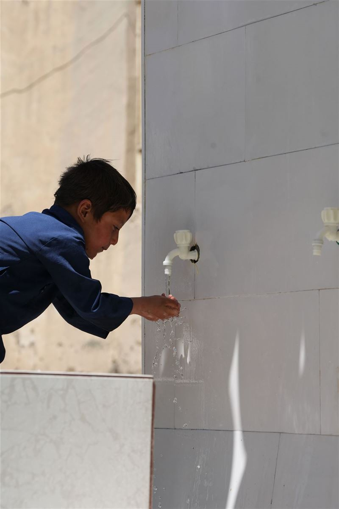

Avrasya Derneği olarak eğitimden sağlığa, gıda yardımından kalıcı eserlere uzanan faaliyetlerimizle ihtiyaç sahiplerinin yanında oluyoruz. Her faaliyetimizi planlı, şeffaf ve denetlenebilir bir şekilde hayata geçiriyoruz.
Her faaliyetimiz; ihtiyaç tespiti, kaynak planlaması, saha çalışması ve raporlama aşamalarından oluşan bir planlama döngüsüyle yürütülür. Aşağıdaki sayfalarda her faaliyetin özetini ve planlamasını inceleyebilirsiniz.
Burs, kırtasiye, okul çantası ve eğitim desteğiyle çocukların geleceğine yatırım.
Sayfayı GörCami, okul, su kuyusu ve benzeri nesilden nesile kalacak eserler.
Sayfayı GörKömür, battaniye, mont ve bot ile soğuk kış günlerinde sıcak bir nefes.
Sayfayı Gör
Temel gıda paketleriyle sofralara bereket, ailelere umut oluyoruz.
Sayfayı Gör
Vekâletle kurban organizasyonu; kesim, paketleme ve ihtiyaç sahibine ulaştırma.
Sayfayı Gör
Adak, akika ve şükür kurbanlarınızı yıl boyunca ihtiyaç sahiplerine ulaştırıyoruz.
Sayfayı GörAşevimizde her gün hazırlanan sıcak yemeklerle sofraları birlikte kuruyoruz.
Sayfayı Gör
Temiz suya erişim için kuyu açıyor, kırsal bölgelerde hayatı dönüştürüyoruz.
Sayfayı GörYetim ve ihtiyaç sahibi çocuklarımızın sünnet organizasyonunu üstleniyoruz.
Sayfayı GörSayfalar, saha çalışmalarından yeni fotoğraflar eklendikçe güncellenmektedir. Görsel eklemek istediğiniz faaliyet için lütfen bizimle iletişime geçin.
Avrasya Derneği ve faaliyetlerimiz hakkında merak edilenler:
Derneğimiz; eğitim projesi, kalıcı eserler, kışlık ihtiyaçlar, kumanya, kurban bayramı, nafile kurban, sıcak yemek, su kuyusu ve sünnet-kirve alanlarında planlı ve şeffaf bir şekilde faaliyet yürütmektedir.
Bağışlarınız, saha ekiplerimizin önceden tespit ettiği ihtiyaç sahiplerine planlı şekilde ulaştırılır; her aşama kayıt altına alınır ve şeffaf bir şekilde raporlanır.
Evet. Kurban, su kuyusu ve kalıcı eser gibi faaliyetlerde bağışçılarımıza görsellerle birlikte detaylı raporlar sunulmaktadır.
Derneğimizle iletişime geçerek gönüllü formu doldurabilir; paketleme, dağıtım ve saha çalışmalarında gönüllü olarak yer alabilirsiniz.
Faaliyetlerimiz, saha ekiplerimizin ihtiyaç tespiti yaptığı yurt içi ve yurt dışı bölgelerde yürütülmektedir.